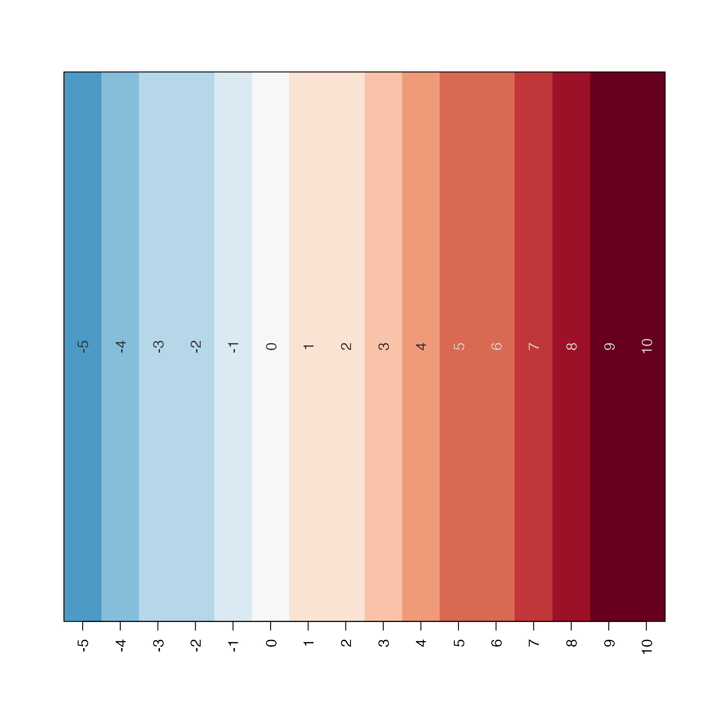

Apply color gradient to numeric values
Usage
vals2colorLevels(
x,
divergent = TRUE,
col = "RdBu_r",
defaultBaseColor = "#FFFFFF",
lens = 0,
numLimit = NULL,
baseline = NULL,
rampN = 25,
verbose = FALSE,
...
)Arguments
- x
numeric vector
- divergent
logical indicating whether the numeric values are divergent, by default baseline=0 will center the color ramp at zero.
- col
color value compatible with the
colargument ofjamba::getColorRamp(). Example include: single color; multiple colors; single color ramp name; or a custom color function.- defaultBaseColor
character color used as a base color when a single color is supplied in
col.- lens
numeric value sent to
jamba::warpRamp(), to define the level of color warping to apply to the color gradient, wherelens=0applies no adjustment.- numLimit
numeric value indicating the maximum numeric value, where values in
xgreater than this value are assigned to the maximum color. When not defined, anddivergent=TRUEit usesmax(abs(x), na.rm=TRUE), ordivergent=FALSEit usesmax(x, na.rm=TRUE).- baseline
numeric value indicating the minimum numeric value, where values in
xless than this value are assigned to the minimum color. When not defined, anddivergent=TRUEit setsbaseline=0; whendivergent=FALSEit usesmin(x, na.rm=TRUE).- rampN
integer number of colors to define for the color gradient. Higher values define a smooth color gradient.
- verbose
logical indicating whether to print verbose output.
- ...
additional arguments are passed to
jamba::getColorRamp().
Details
This function is similar to several other existing R functions
that take a vector of numeric values, and apply a color gradient
(color ramp) to the numeric values. This function provides the ability
to warp the color ramp, for example using jamba::warpRamp() in order
to adjust the color gradient relative to the numeric range of the
data.
Note that the function col_div_xf() and col_linear_xf() may
be preferable to this function. Those functions assign colors
to specific numeric values, instead of assigning colors between
numeric break points.
See also
Other colorjam assignment:
col_div_xf(),
col_linear_xf(),
group2colors(),
matrix2heatColors(),
rainbowJamMulti(),
vibrant_color_by_hue()
Examples
# Start with an example numeric vector
x <- jamba::nameVector(-5:10);
jamba::showColors(vals2colorLevels(x));
# decrease the number of gradient colors
jamba::showColors(vals2colorLevels(x, rampN=15))

# change the baseline
jamba::showColors(vals2colorLevels(x, baseline=-2));
 # adjust the gradient using lens
par("mar"=c(5,5,4,2));
jamba::imageByColors(jamba::rbindList(lapply(jamba::nameVector(c(-5,-2,0,2,5)), function(lens){
vals2colorLevels(x, rampN=25, lens=lens);
})));
title(ylab="color lens factor", xlab="numeric value",
main="Effects of warping the color gradient");
# adjust the gradient using lens
par("mar"=c(5,5,4,2));
jamba::imageByColors(jamba::rbindList(lapply(jamba::nameVector(c(-5,-2,0,2,5)), function(lens){
vals2colorLevels(x, rampN=25, lens=lens);
})));
title(ylab="color lens factor", xlab="numeric value",
main="Effects of warping the color gradient");